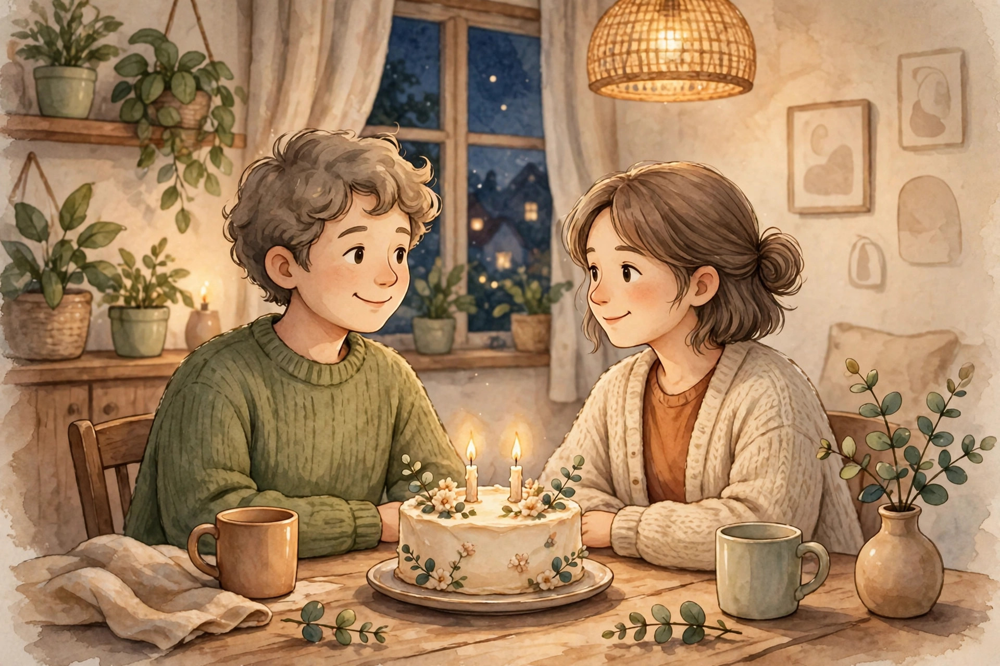

Couple Aesthetic Prompts: 10 Ideas for ChatGPT and Gemini 2026


Aesthetic is a fancy word for a simple thing. A photo of the two of you that looks calm, natural, and like you actually enjoy each other's company.
These prompts start with one clear photo of each of you. The tool places you in soft, everyday scenes, a mirror selfie at home, a sunset walk, a picnic in the park, and keeps both faces looking like you.
Nothing here is staged or stiff. The scenes are the kind of thing couples already do together, which is why the photos come out feeling real.
They are free. Try a few, keep the ones you both like, and use them for a post, a print, or your phone wallpaper.
Before you start
Two faces are harder than one, so the setup matters. Five quick points first.
- Use one clear photo of each person, both in daylight, with faces in focus and looking at the camera.
- Pick photos with plain backgrounds. A busy background makes it harder to place you both in a new scene.
- Keep the light in both photos similar, so the two of you blend into one picture.
- Copy the prompt exactly on the first try, then change one thing at a time.
- Only use photos of people who are happy for you to use them.
Table of contents
- Prompt 1: Mirror selfie at home
- Prompt 2: Coffee date in a cafe
- Prompt 3: Sunset walk on the beach
- Prompt 4: Rooftop at dusk
- Prompt 5: Reading together on a sofa
- Prompt 6: Rainy day by the window
- Prompt 7: Picnic in a park
- Prompt 8: Night walk in the city
- Prompt 9: Cooking together
- Prompt 10: Golden hour in a field
- How to use these prompts
- Tips to get a better result
- Common mistakes to avoid
- Frequently asked questions
10 copy and paste prompts
Pick the scene that feels most like you, copy the prompt, and paste it with both of your photos.
1. Mirror selfie at home
Create a realistic, natural photo from my uploaded photo. Keep the face exactly the same as in the uploaded photo, with the same eyes, smile, hair and skin tone. Do not change the person into someone else, and do not make the skin look smooth or plastic. Show you as a couple taking a mirror selfie at home, in simple outfits, with warm afternoon light. Keep the pose relaxed and natural, with a real expression, not a stiff studio pose. Use soft, natural light that suits the scene, with clear detail in the face, hair and clothes. Keep the background simple so the person stays the main focus. Shoot it in a vertical 3 to 4 frame, as if taken on a 35mm lens with a shallow depth of field. The final photo should look like a real photo taken on a good day, with true colours, gentle shadows and a calm, honest feel. It should work well for a profile photo, a print, or a post with family and friends.
A mirror selfie at home is relaxed and honest, and it suits a couple who take photos for themselves, not for anyone else. The room stays plain behind you.
2. Coffee date in a cafe
Create a realistic, natural photo from my uploaded photo. Keep the face exactly the same as in the uploaded photo, with the same eyes, smile, hair and skin tone. Do not change the person into someone else, and do not make the skin look smooth or plastic. Show you as a couple at a small cafe table, with coffee cups, laughing softly, in warm indoor light. Keep the pose relaxed and natural, with a real expression, not a stiff studio pose. Use soft, natural light that suits the scene, with clear detail in the face, hair and clothes. Keep the background simple so the person stays the main focus. Shoot it in a vertical 3 to 4 frame, as if taken on a 50mm lens with a shallow depth of field. The final photo should look like a real photo taken on a good day, with true colours, gentle shadows and a calm, honest feel. It should work well for a profile photo, a print, or a post with family and friends.
A coffee date in a cafe is a small, everyday moment, and that is what makes it work. The cups and the table keep the scene simple.
3. Sunset walk on the beach
Create a realistic, natural photo from my uploaded photo. Keep the face exactly the same as in the uploaded photo, with the same eyes, smile, hair and skin tone. Do not change the person into someone else, and do not make the skin look smooth or plastic. Show you as a couple walking on a beach at sunset, holding hands, with soft gold light. Keep the pose relaxed and natural, with a real expression, not a stiff studio pose. Use soft, natural light that suits the scene, with clear detail in the face, hair and clothes. Keep the background simple so the person stays the main focus. Shoot it in a vertical 3 to 4 frame, as if taken on a 85mm portrait lens with a shallow depth of field. The final photo should look like a real photo taken on a good day, with true colours, gentle shadows and a calm, honest feel. It should work well for a profile photo, a print, or a post with family and friends.
A sunset walk on the beach is calm and warm, and the low light flatters both faces. The sea stays soft behind you.
4. Rooftop at dusk
Create a realistic, natural photo from my uploaded photo. Keep the face exactly the same as in the uploaded photo, with the same eyes, smile, hair and skin tone. Do not change the person into someone else, and do not make the skin look smooth or plastic. Show you as a couple on a rooftop at dusk, with city lights behind you and a calm sky. Keep the pose relaxed and natural, with a real expression, not a stiff studio pose. Use soft, natural light that suits the scene, with clear detail in the face, hair and clothes. Keep the background simple so the person stays the main focus. Shoot it in a vertical 3 to 4 frame, as if taken on a 35mm lens with a shallow depth of field. The final photo should look like a real photo taken on a good day, with true colours, gentle shadows and a calm, honest feel. It should work well for a profile photo, a print, or a post with family and friends.
A rooftop at dusk gives the photo a city glow, with the lights coming on behind you. You stay close and clear in front of them.
5. Reading together on a sofa
Create a realistic, natural photo from my uploaded photo. Keep the face exactly the same as in the uploaded photo, with the same eyes, smile, hair and skin tone. Do not change the person into someone else, and do not make the skin look smooth or plastic. Show you as a couple reading together on a sofa, close and relaxed, with soft lamp light. Keep the pose relaxed and natural, with a real expression, not a stiff studio pose. Use soft, natural light that suits the scene, with clear detail in the face, hair and clothes. Keep the background simple so the person stays the main focus. Shoot it in a vertical 3 to 4 frame, as if taken on a 50mm lens with a shallow depth of field. The final photo should look like a real photo taken on a good day, with true colours, gentle shadows and a calm, honest feel. It should work well for a profile photo, a print, or a post with family and friends.
Reading together on a sofa is quiet and close, which is the whole feel of this prompt. The soft indoor light keeps both faces gentle.
6. Rainy day by the window
Create a realistic, natural photo from my uploaded photo. Keep the face exactly the same as in the uploaded photo, with the same eyes, smile, hair and skin tone. Do not change the person into someone else, and do not make the skin look smooth or plastic. Show you as a couple by a large window on a rainy day, with warm light inside and rain outside. Keep the pose relaxed and natural, with a real expression, not a stiff studio pose. Use soft, natural light that suits the scene, with clear detail in the face, hair and clothes. Keep the background simple so the person stays the main focus. Shoot it in a vertical 3 to 4 frame, as if taken on a 85mm portrait lens with a shallow depth of field. The final photo should look like a real photo taken on a good day, with true colours, gentle shadows and a calm, honest feel. It should work well for a profile photo, a print, or a post with family and friends.
A rainy day by the window is soft and calm, with grey light that suits faces. The rain outside adds mood without any fuss.
7. Picnic in a park
Create a realistic, natural photo from my uploaded photo. Keep the face exactly the same as in the uploaded photo, with the same eyes, smile, hair and skin tone. Do not change the person into someone else, and do not make the skin look smooth or plastic. Show you as a couple on a picnic blanket in a park, with simple food, green grass, and soft daylight. Keep the pose relaxed and natural, with a real expression, not a stiff studio pose. Use soft, natural light that suits the scene, with clear detail in the face, hair and clothes. Keep the background simple so the person stays the main focus. Shoot it in a vertical 3 to 4 frame, as if taken on a 35mm lens with a shallow depth of field. The final photo should look like a real photo taken on a good day, with true colours, gentle shadows and a calm, honest feel. It should work well for a profile photo, a print, or a post with family and friends.
A picnic in a park is open and sunny, and the blanket and the food give you a shared scene. It feels like a real afternoon out.
8. Night walk in the city
Create a realistic, natural photo from my uploaded photo. Keep the face exactly the same as in the uploaded photo, with the same eyes, smile, hair and skin tone. Do not change the person into someone else, and do not make the skin look smooth or plastic. Show you as a couple walking in a city at night, with soft street lights and a quiet street. Keep the pose relaxed and natural, with a real expression, not a stiff studio pose. Use soft, natural light that suits the scene, with clear detail in the face, hair and clothes. Keep the background simple so the person stays the main focus. Shoot it in a vertical 3 to 4 frame, as if taken on a 50mm lens with a shallow depth of field. The final photo should look like a real photo taken on a good day, with true colours, gentle shadows and a calm, honest feel. It should work well for a profile photo, a print, or a post with family and friends.
A night walk in the city is lively, with lights behind you and the two of you in front. The contrast makes the photo stand out.
9. Cooking together
Create a realistic, natural photo from my uploaded photo. Keep the face exactly the same as in the uploaded photo, with the same eyes, smile, hair and skin tone. Do not change the person into someone else, and do not make the skin look smooth or plastic. Show you as a couple cooking together in a bright kitchen, smiling, with fresh food on the counter. Keep the pose relaxed and natural, with a real expression, not a stiff studio pose. Use soft, natural light that suits the scene, with clear detail in the face, hair and clothes. Keep the background simple so the person stays the main focus. Shoot it in a vertical 3 to 4 frame, as if taken on a 85mm portrait lens with a shallow depth of field. The final photo should look like a real photo taken on a good day, with true colours, gentle shadows and a calm, honest feel. It should work well for a profile photo, a print, or a post with family and friends.
Cooking together is a real shared moment, and it shows in the photo. The kitchen stays simple so the two of you lead.
10. Golden hour in a field
Create a realistic, natural photo from my uploaded photo. Keep the face exactly the same as in the uploaded photo, with the same eyes, smile, hair and skin tone. Do not change the person into someone else, and do not make the skin look smooth or plastic. Show you as a couple in a field at golden hour, with tall grass, warm light, and a soft sky. Keep the pose relaxed and natural, with a real expression, not a stiff studio pose. Use soft, natural light that suits the scene, with clear detail in the face, hair and clothes. Keep the background simple so the person stays the main focus. Shoot it in a vertical 3 to 4 frame, as if taken on a 50mm lens with a shallow depth of field. The final photo should look like a real photo taken on a good day, with true colours, gentle shadows and a calm, honest feel. It should work well for a profile photo, a print, or a post with family and friends.
Golden hour in a field is warm and open, with low light that suits both faces. The field stays plain, so the couple is the picture.
How to use these prompts
How to use a prompt in Google Gemini
- Open Gemini on your phone or computer.
- Upload one clear photo of each person.
- Copy one prompt from this page and paste it under the photos.
- Send it and wait.
- Check both faces first, then the light and the setting. Save the picture you like.
How to use a prompt in ChatGPT
- Open ChatGPT on your phone or computer.
- Upload both photos in the chat.
- Copy one prompt from this page and paste it with the photos.
- Send it and wait for the result.
- If the scene or the light is not quite right, ask for one small change only.
The best aesthetic photos look unplanned, so if a result feels stiff, try the picnic or cooking prompt. A shared activity usually relaxes both faces.
Tips to get a better result
- Use photos taken in similar light, both in daylight if you can. Mixed light is the main reason two faces do not blend.
- Keep the scene simple. A plain setting lets the two of you carry the photo.
- Try the sunset and golden hour prompts first. Warm light is kind to faces.
- Check the hands and the edges of the photo in the result. Those are the spots where errors show up.
- Ask for a vertical photo if you want it for a post or a phone screen.
- Save the prompt that worked. It will keep the same feel with new photos.
Common mistakes to avoid
- Do not use a dark, blurry or side view photo for either person. The tool will guess, and the face will change.
- Do not use a photo of another person without their permission.
- Do not change everything in the prompt at once. Change one thing and see what happens.
- Do not expect the same result every time. Try again if the first picture is not right.
- Do not add too many details to the scene. A simple setting beats a crowded one.
Frequently asked questions
Can I use these prompts for free?
Yes, all 10 prompts are free. Copy one, paste it into Gemini or ChatGPT with your own photos, and use the picture for a post, a print, or just for yourselves.
Which tool works best with these prompts?
Both work well with couple photos. Gemini often handles two reference photos nicely, and ChatGPT often follows a detailed prompt well. Try the same prompt in both and keep the picture you like best.
Why does the face change in my photo?
It usually comes from the starting photos. If one is dark, blurry or taken from the side, the tool guesses that face. Use clear front photos of both people in good light.
Can I change the prompt for my own photo?
Yes. Change the setting, the outfits or the light to suit your photos. Keep the part about keeping both faces the same, and keep the scene simple.
Can I use the photo I make for a card or a post?
Yes, for your own personal use, like a post on your own social media or a print. Only use photos of people who are happy for you to use them.
Related guides



See all Couple Prompts guides | Back to the home page
Written by Muhammad Afaq Verified Creator
Muhammad Afaq is a writer and AI prompt creator at Prompt Haven. He writes each prompt, then tests it on Gemini and ChatGPT with real photos, to check that it is clear, simple, and easy to copy and paste.